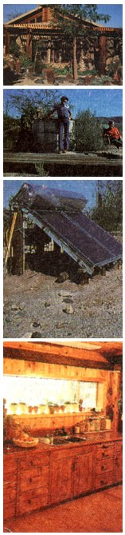

Roof overhangs, an arbor, exterior venetian blinds, and a passive solar ventilation system help cool Jim Harmon's owner-built desert home. Some of the other features include: an outdoor hot tub, solar-heated water, and hand- crafted kitchen cabinetry.